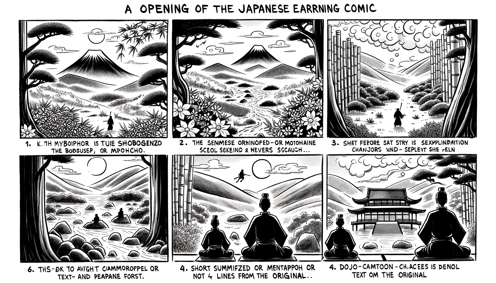

七十五巻 巻一覧
正法眼藏第63 發菩提心
本ページは各巻の紹介ページです。tools/gen_web_volumes.py が doc/正法眼蔵.txt から要点の短い抜粋を載せています（全文の引用ではありません）。
出典（原文）: https://shomonji.or.jp/zazen/doc/genzou.html
原文・現代語訳の全文は 全文ページを参照してください。
この巻の紹介（概要）
道元『正法眼蔵』七十五巻の第63篇「發菩提心」です。禅籍・経典への引用や語の行間が重なりやすいので、一度ですべてを要約に還元しない読み方を推奨します。問答 Bot では巻スコープにこの題名を含めると応答が安定しやすいことがあります。
語彙の足場
- 題名語：巻題「發菩提心」は、道元が本章で特に扱う論点の看板です。辞書義だけに固定せず、原文中の用例で意味を確かめます。
- 引用と典故：公案・経文の引用は、一字一句の照応（何に答えているか）を押さえると全体が見えやすくなります。
- 学び方：抜粋だけでも音読し、分からない箇所は印を付けて後から問うとよいです。
原文（要点の抜粋）
当巻の冒頭付近からの短い抜粋です。長い引用は載せていません。全文は全文ページを参照してください。出典はリポジトリ内 doc/正法眼蔵.txt です。原文の参照元: https://shomonji.or.jp/zazen/doc/genzou.html
西國高祖曰、雪山喩大涅槃（雪山を大涅槃に喩ふ）。
しるべし、たとふべきをたとふ。たとふべきといふは、親曾なるなり、端的なるなり。いはゆる雪山を拈來するは喩雪山なり。大涅槃を拈來する、大涅槃にたとふるなり。
震旦初祖曰、心心如木石。
いはゆる心は心如なり。盡大地の心なり。このゆゑに自他の心なり。盡大地人および盡十方界の佛祖および天、龍等の心心は、これ木石なり。このほかさらに心あらざるなり。この木石、おのれづから有、無、空、色等の境界に籠籮せられず。この木石心をもて發心修證するなり、心木心石なるがゆゑなり。この心木心石のちからをもて、而今の思量箇不思量底は現成せり。心木心石の風聲を見聞するより、はじめて外道の流類を超越するなり。それよりさきは佛道にあらざるなり。
大證國師曰、牆壁瓦礫、是古佛心。
いまの牆壁瓦礫、いづれのところにかあると參詳看あるべし。是什麼物恁麼現成と問取すべし。古佛心といふは、空王那畔にあらず。粥足飯足なり、草足水足なり。かくのごとくなるを拈來して、坐佛し作佛するを、發心と稱ず。
おほよそ發菩提心の因緣、ほかより拈來せず、菩提心を拈來して發心するなり。菩提心を拈來するといふは、一莖草を拈じて造佛し、無根樹を拈じて造經するなり。いさごをもて供佛し、漿をもて供佛するなり。一摶の食を衆生にほどこし、五莖の花を如來にたてまつるなり。他のすすめによりて片善を修し、魔に嬈せられて禮佛する、また發菩提心なり。しかのみにあらず、知家非家、捨家出家、入山修道、信行法行するなり。造佛造塔するなり。讀經念佛するなり。爲衆説法するなり、尋師訪道するなり。跏趺坐するなり、一禮三寶するなり、一稱南無佛するなり。
かくのごとく、八萬法蘊の因緣、かならず發心なり。あるいは夢中に發心するもの、得道せるあり、あるいは醉中に發心するもの、得道せるあり。あるいは飛花落葉のなかより發心得道するあり、あるいは桃花翠竹のなかより發心得道するあり。あるいは天上にして發心得道するあり、あるいは海中にして發心得道するあり。これみな發菩提心中にしてさらに發菩提心するなり。身心のなかにして發菩提心するなり。諸佛の身心中にして發菩提心するなり、佛祖の皮肉骨髓のなかにして發菩提心するなり。
しかあれば、而今の造塔造佛等は、まさしくこれ發菩提心なり。直至成佛の發心なり、さらに中間に破癈すべからず。これを無爲の功徳とす、これを無作の功徳とす。これ眞如觀なり、これ法性觀なり。これ諸佛集三昧なり、これ得諸佛陀羅尼なり。これ阿耨多羅三藐三菩提心なり、これ阿羅漢果なり、これ佛現成なり。このほかさらに無爲無作等の法なきなり。
しかあるに、小乘愚人いはく、造像起塔は有爲の功業なり。さしおきていとなむべからず。息慮凝心これ無爲なり、無生無作これ眞實なり、法性實相の觀行これ無爲なり。かくのごとくいふを、西天東地の古今の習俗とせり。これによりて、重罪逆罪をつくるといへども造像起塔せず、塵勞稠林に染汚すといへども念佛讀經せず。これただ人天の種子を損壞するのみにあらず、如來の佛性を撥無するともがらなり。まことにかなしむべし、佛法僧の時節にあひながら、佛法僧の怨敵となりぬ。三寶の山にのぼりながら空手にしてかへり、三寶の海に入りながら空手にしてかへらんことは、たとひ千佛萬祖の出世にあふとも、得度の期なく、發心の方を失するなり。これ經卷にしたがはず、知識にしたがはざるによりてかくのごとし。おほく外道邪師にしたがふによりてかくのごとし。造塔等は發菩提心にあらずといふ見解、はやくなげすつべし。こころをあらひ、身をあらひ、みみをあらひ、めをあらうて見聞すべからざるなり。まさに佛經にしたがひ、知識にしたがひて、正法に歸し、佛法を修學すべし。
佛法の大道は、一塵のなかに大千の經卷あり、一塵のなかに無量の諸佛まします。一草一木ともに身心なり。萬法不生なれば一心も不生なり、諸法實相なれば一塵實相なり。しかあれば、一心は諸法なり、諸法は一心なり、全身なり。造塔等もし有爲ならんときは、佛果菩提、眞如佛性もまた有爲なるべし。眞如佛性これ有爲にあらざるゆゑに、造像起塔すなはち有爲にあらず、無爲の發菩提心なり、無爲無漏の功徳なり。ただまさに、造像起塔等は發菩提心なりと決定信解すべきなり。億劫の行願、これより生長すべし、億億萬劫くつべからざる發心なり。これを見佛聞性といふなり。
しるべし、木石をあつめ泥土をかさね、金銀七寶をあつめて造佛起塔する、すなはち一心をあつめて造塔造像するなり。空空をあつめて作佛するなり、心心を拈じて造佛するなり。塔塔をかさねて造塔するなり、佛佛を現成せしめて造佛するなり。
図解（4コマ・AI生成）
教義の根拠は原文・出典に従い、漫画は比喩の補助に留めてください。

深掘り（読解のコツ）
- 道元文は定義の羅列に見えても、多くの場合誤解への遮断と正伝の姿勢が背骨になっています。
- 「当体」「現成」「即」などの語が出たら、その巻独自の差別相にどう接続しているかをメモしておくとよいです。